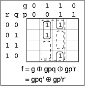

Boolean algebra in terms of the exclusive-OR operator - Part 2 (revised October 2000)
- Introduction
- Summary of the theorems for the exclusive-OR operator
- Canonical forms
- The algebraic simplification of the exclusive-OR form
- The chart method of finding C2 from C1
- The simplification process Recombination identities
- Another example and alternative expressions
- The treatment of redundancies with the algebraic simplification procedure
- Conclusion
Note: You can use this list of contents and the
symbols  and to navigate through this document.
and to navigate through this document.
In part 1 of this paper I presented the theorems of the exclusive-OR algebra, that is Boolean algebra based on the exclusive-OR (XOR) and AND operators, and demonstrated that this algebra is a complete Boolean algebra in its own right and has useful applications for the design of digital circuits and CPLDs. I also showed how to use a conventional Karnaugh map, or K-map, to deal with this algebra. In this article I will continue my assertion that exclusive-OR algebra has the required methods for simplification that are necessary to make this algebra convenient and useful for the design of digital circuits.
Part 1 of this paper describes all the preliminary requirements for understanding the content of this paper. You should refer back to that if you are unsure of these details. I have reproduced the list of theorems of XOR algebra and the canonical forms here for reference. The figure numbers in this paper continue on from the figure numbers in Part 1 as posted in these pages. The figure numbers are not continuous with the "New Logic" article figure numbers.
In this article I describe my approach to the simplification of XOR functions. Over recent years a number of alternative approaches have been described in the literature. To a large extent my approach has been independent of this literature. Consequently my terminology may differ slightly from current practise. Most of this literature is intended for the use of specialists and it is clear that there is a great deal of interest and research going on in this field. A link to a comprehensive source of this literature is in Part 3 of these pages. My articles on this subject are not specifically intended for specialists and I have endeavoured to make them readable rather than concise.
The method I describe is readily useable, for working with paper and pencil, for up to 6 variables. You may need a bit of practice with it before you get up to speed with it.
 Summary of the theorems for the exclusive-OR operator
Summary of the theorems for the exclusive-OR operator
| T1. x x = 0 | T2. x x' = 1 | Basic theorems |
| T3. x 0 = x | T4. x 1 = x' | |
| T5. (x y)' = x' y = x y' | T6. x' y' = x y | Inversion theorems |
| T7. x y = y x | Commutative law | |
| T8. (x y) z = x (y z) | Associative law | |
| T9. x(y z) = xy xz | Distributive law | |
| T9' x(y z) = (x'+y) (x'+z) | Distributive law with OR function | |
| T10. If: f = g h and gh = 0, then f = g + h | Disjunction | |
| T11. If: f = g h, then g = f h and h = g f | Transposition | |
 Canonical forms
Canonical forms
where: a i = 1,0 depending on whether the ith term is present or not.
C2. f(abc) = b0 b1a b2b b3c b4ab b5ac b6bc b7abcwhere: bi = 1,0 depending on whether the ith term is present or not.
These are the canonical forms used in these articles. Other possibilities and terminology are described in the literature.
 The algebraic simplification of the exclusive-OR form
The algebraic simplification of the exclusive-OR form
As pointed out in the discussion of Figure 4, in the first part of this paper (Figure 9 in the "New Logic" article), simplification by inspection of a K-map of functions of more than three variables may not be immediately obvious. Consequently we would like to have a systematic procedure for finding such simplifications. I will describe my approach, including my method of dealing with redundancies, which gives an easily useable and systematic algebraic procedure for the simplification of XOR forms of Boolean functions. The method will be described with examples.
Assuming that the function is given in inclusive-OR form, the first step I take is to expand the function into canonical form, as it is for the Quine-McCluskey method for simplifying AND, OR invert functions. This is so that we can use theorem T10 to get the function into XOR form in the C1 canonical form. Next we expand with T4, x' = x 1, to eliminate all primed variables, to convert the expression to the C2 canonical form. A good many terms cancel out using T1 and T3. We can use a tabular or chart arrangement to reduce the work of producing this form. This is described in the next section.
You may recall that simplification methods for the AND, OR invert algebra depended on making systematic use of the relation: x + x' = 1 and the distributive theorem. You then look for prime implicants.
For the XOR algebra we will make systematic use of the relation: x x' = 1, mainly in the form 1 x = x' and the distributive theorem T9 using the C2 form of the function as a starting point. The idea of looking for prime implicants is not appropriate here. You can of course apply the simplification procedures to be described with the function not strictly in C2 form but this may not save any effort particularly if there are many variables in the function.
 The chart method of finding C2 from C1
The chart method of finding C2 from C1
Function f1 from Figure 4 will be used for illustrating the procedure. To refresh your memory once again this function was:
f1 |
= a'b'c + a'cd + bc'd + ac'd' + abd' | |
| = a'b'cd' + a'b'cd + a'bc'd + a'bcd + ab'c'd' + abc'd' + abc'd + abcd' | ,Expanded to C1 | |
| = a b'c bd ac'd. | ,Result given |
To draw up the chart write down all C2 terms across the page as headings to columns. Allow one column on the left hand side of the page to list all the C1 terms taken from the K-map for the function. Each of the C1 terms will be expanded to form C2 terms. C2 terms consist of the number 1, all the variables singly, all possible pairs of variables, then all triples of variables and so on up to a column for all the variables in a term. Refer to Figure 8 for details of the construction. A '1' is placed in the columns for the C2 terms derived from each C1 term in the row for the C1 term. To see the rule for doing this we will expand one of the C1 terms. For example;
a'b'cd' |
= (1 a)(1 b)c(1 d) |
| = (1 a b ab)c(1 d) | |
| = c(1 a b d ab ad bd abd) |
Without finishing the last line of the expansion you can see that the expansion will lead to all the C2 terms that have the variable c in them. Hance in the chart we place a 1 in all columns that have a c somewhere in their C2 term, in the row for the C1 term.
If you try the same thing with a C1 term that has two unprimed variables in it then you will find that you get all C2 terms that have both of the unprimed variables in them. You can see that this is going to happen from the development of the example. The same result applies to C1 terms with larger numbers of unprimed variables. Therefore the general rule for filling 1s in the columns is that you take the unprimed variables in the C1 terms and place 1s in all the columns that have the same variables in their C2 terms in the row for the C1 term. If there are no unprimed variables in a C1 term you place 1s in all columns. To get the function in the final C2 form you of course cross out all columns that have an even number of 1s in them. You now have the function in a convenient exclusive-OR form for starting the minimisation process. For large tables, the use of a spreadsheet program can save a lot of work drawing up the table.
 The simplification process
The simplification process
The algebraic method sets out to reduce the given function to minimal form by the systematic application of a small number of reduction or simplification rules. The function will be defined as minimal when further opportunities for applying the rules are exhausted. ie. No further reductions are possible. There are often alternative ways of expressing a function in terms of the XOR operator. The function minimised on the basis of the above definition is a good starting point for arranging the final expression the way you want it. I might add that the procedure is easier to do than the explanation would suggest.
Simplification rule 1. Consider two terms one of which has n+1 variables in it. We will call this term a. The other term has n variables all of which are the same as n of the variables in a and with the same exponents, i.e. truth values. We will call this term b. After taking out the common factor you eliminate the b term when you complement the extra variable in the a term. Simplification rule 1 says that you should do this, starting with the terms with the most variables. This rule follows from T9, the distributive theorem and T4, 1 x = x'. You can see that we are starting to go back the other way and reintroduce primed variables but now with many duplicate terms eliminated.
Simplification rule 2. Consider the same two terms a and b with the same arrangement of variables. However, this time one of the n variables has the opposite exponent to the corresponding variable in the other term. We can reverse the exponent of this variable by adding a term g with n-1 variables, where the n-1 variables are the same as the variables that are the same in a and b. We add the term g twice to avoid changing the function. One of the g terms is eliminated to complement the exponent of the variable in the a term that had a different exponent. The b term can now be eliminated by simplification rule 1. Simplification rule 2 is to do this. The following example should make this clear. In the following expressions 'g' represents the remaining variables:
abg a'g |
= abg a'g g g |
| = abg g(1 a') g | |
| = abg ag g | |
| = ab'g g |
We have effectively eliminated one of the variables in the b term. To use this rule you would not actually perform all the intermediate steps. You would go to the result directly. Rule 2 can be extended to the case where two or more of the exponents of b differ from the corresponding exponents of a. An additional g term is added for each application of rule 2 until the b term can be eliminated. The additional terms g can often be eliminated in subsequent working.
The whole of this procedure can be done in one line of working by adding the g terms one by one, at the same time modifying the exponents on the variables of b until b is eliminated and finally modifying the extra variable of a. For example:
Rule 2 should be carried out to completion wherever possible. The effect of this rule is to eliminate all the b terms that have the same variables as the a terms. The rule is not applicable to b terms whose variables are not all the same as the variables of the a terms. Also the rule is not applicable if b has less than n terms. Consequently an easily recognisable point is reached at which no further application of the rule is possible.
Simplification rule 3. If two terms contain the same number of variables and the variables of each are the same but with different exponents, then both terms can be made to have the same exponents and can therefore be eliminated by the addition of one less variable terms by the procedure of rule 2. Rule 3 is that this procedure should be applied wherever possible.
The rules are applied to the terms with the most variables first. We then work our way down to terms with fewer variables. The function is regarded as minimal when no further applications of these rules is possible. The minimal function that results is characterised as follows:
If there are n variables represented in the function there will be at most only one term containing all n variables. If a term exists with all n variables present there will be no term containing n - 1 variables If the terms containing the largest number of variables contain m < n variables, then such terms that have all variables the same can be completely eliminated if there are an even number of such terms and reduced to a single term if there are an odd number of such terms. The remaining terms containing m - 1 variables are completely combined with m-variable terms that have variables in common with them at the same time producing (m -2)-variable terms. The procedure is continued from the (m - 2)-variable level without further consideration of the m-variable terms.
Starting with the function in C2 form it is possible to carry out the entire simplification process in one line of working thus avoiding much repetitive writing out. This is done by adding additional terms as they are needed, modifying exponents and crossing out terms as they are eliminated. For the example that we used at the start of this section there are only two steps possible:
Compare this result with the K-map shown in Figure 9. The K-map makes a good way to check the result if you are working with paper and pencil.
 Recombination identities
Recombination identities
Application of these 3 rules will very often be sufficient to minimise the XOR function. However, recombinations can sometimes be made to reduce the total number of product terms.
The function may contain the constant 1 and terms containing two variables each. If there are two such terms one of which contains a variable p say and the other the complement of this variable p', then the constant 1 can be eliminated by the substitution p p' = 1 and application of rule 1. (If the function contained the constant 1 and a term with one variable, you could get rid of the 1 by simply inverting the single variable).
| e.g. 1 pq p'r | = p p' pq p'r | |
| = pq' p'r' | ...(R1) |
This result can be generalised to enable a term with a single variable to be combined with two terms with 3 variables each. The diagram opposite illustrates how this works.
| e.g. g gpq gp'r | = gp gp' gpq gp'r | |
| = gpq' gp'r' | ...(R1a) |
In some cases it may be possible to recombine two single variable terms into a single two variable term as in the following example:
e.g. a b ab'c |
= ab ab a b ab'c | |
| = ab' a'b ab'c | ||
| = a'b ab'c' | ...(R2) |
This principle can be generalised to terms with larger numbers of variables as in the following identity:
e.g. ga gb gab'c |
= ga'b gab'c' | ...(R2a) |
 Another example and alternative expressions
Another example and alternative expressions
To further illustrate the technique another worked example is shown in Figure 10. The bullets at the top of the chart mark the terms in the C2 expansion. The function has been chosen to represent as many features as possible.
The minimal expression obtained may often be written with different permutations of the primes. Two cases are:
| T12a. | ga gbc gb'd |
= g(a bc b'd) |
| = g(1 a' bc b'd) | ||
| = g(b b' a' bc b'd) | ||
| = g(a' bc' b'd') | ||
| = ga' gbc' gb'd' | ||
| T12b. | gc gd |
= g(c d) |
| = gc' gd' |
As an example f1 can be written as: f1 = a' b'c' bd' ac'd ,by T12a
T12a and b can often be used to make it possible to use R1 or R2 when these are not initially in the right form.
There are special cases where this simplification method does not lead to the minimum solution.
| e.g. | f |
= a'bcd' + ab'cd |
| = bc abc acd bcd | ||
| = a'bc acd bcd |
The second line above is the C2 form and the third line is one of six possible solutions. Each of the solutions has three terms compared with two terms for the function given in line 1. You would simply reject the solution in this case. The + in the first line can be either the inclusive or the exclusive OR, since the two terms are disjoint.
After the minimal form has been found it is sometimes possible to take advantage of common factors to reduce the number of XOR operators in the representation of the function.
Note: Adjust the width of the browser screen if Figure 10 overlaps the following equations.
For the example shown in Figure 10:
f(a,b,c,d,e) |
= S(0,4,13,14,15,16,18,20,22,29,31) | |
| = b' e a'de' bc'e a'bc'de' | ,from Figure 10 | |
| = b' e(1 bc') a'de'(1 bc') | ||
| = b' (e a'de')(1 bc') | ||
| = b' (1 e' a'de')(1 bc') | ||
| = b' (1 e'(1 a'd))(1 bc') | ||
| = b' (e'(1 a'd))'(1 bc') | ||
| = b' (e'(a'd)')'(bc')' | ||
| = b ((e'(a'd)')'(bc')')' | NAND form | |
| = b (ae' + bc' + d'e') | SOP form |
Recalling that a NAND gate has the form (ab)' you can see that the right hand side of this result can be implemented with either four NAND gates or perhaps three product terms in a CPLD macrocell depending on your preferred implementation.
 The treatment of redundancies with the algebraic simplification
procedure
The treatment of redundancies with the algebraic simplification
procedure
Redundancies otherwise known as don't care conditions are terms that cannot physically occur and therefore it is immaterial whether they appear in the function or not. There is no difficulty taking advantage of redundancies when the K-map approach is used. Redundant terms are simply either mapped an even or odd number of times whichever suits the solution. However, in the algebraic approach to simplification you may not know in advance whether to use a particular redundancy or not prior to performing the simplification process. You could check to see if the redundant terms help to eliminate any terms in the C1 to C2 conversion process. However, more generally you would first perform the complete simplification process with the redundancies set to zero. Any terms amongst the redundancies would then be considered for adding to the minimal function for further minimising the function.
Consider the function:
f(a,b,c) = S(1,2,4) = a b c abc, with the redundant term abc.
The term abc (7) is not included in the original function. It can simply be cancelled out. Next consider the function:
f(a,b,c,d) = S(2,3,4,5,7,8,9,14) = a b c bcd, with the redundant term bcd'.
Here the redundant term can be applied to reinitiate the simplification process as follows (step by step):
a b c bcd |
= a b c bcd bcd' | |
| = a b c bc(d d') | ||
| = a b b'c | ,after taking out the common factor c | |
| = a' b' b'c | ,applying T6 to a b | |
| = a' b'c' |
To assist the process of using redundancies you can first obtain a list of implicants of the redundancies by applying the first part of the Quine-McCluskey simplification process to them. Implicants that have variables in common with terms in the minimal function with as few differences in exponents as possible are then added to the minimal function and the simplification process continued as each redundant term is added. An example will show some of the possibilities:
f3 = a'b a'c' ab'c'd', will be simplified using the list of implicants shown in Figure 11. You can recognise these as the redundancies in a BCD number. F3 is part of a code converter. An oblique stroke / in front of a term indicates that the term has been deleted.
f3 |
= /a'b /a'c' /ab'c'd' /abc'd' /ac'd' /acd' ad'' /ab b /ac' /a c' |
| = b c' ad |
The added terms were: abc'd', acd', ab, ac
If you would like a bit of practice try to prove the following results using the same set of implicants of redundancies:
f4 |
= a'bc' ac'd bc'd | f5 |
= a'd' a'bc' b'c'd |
| = ad bc'd' | = c' a'd' b'c'd' |
It is possible to elaborate the subject further with the application to multiple output circuits. Without going into full details here, one approach is to use T11 to provide opportunities for creating sub-functions that can reduce the total number of product terms required to implement multiple output circuits that have common variables.
This concludes the demonstration that exclusive-OR logic is both a complete Boolean algebra in its own right and has all the graphical and algebraic simplification methods necessary for working with this algebra at least with paper and pencil. Exclusive-OR logic together with inclusive-OR logic makes Boolean algebra a more complete methodology for working with the logic of digital circuits. The examples given show how to manipulate functions in exclusive-OR form. The algebraic simplification method described in this paper can readily be used with paper and pencil for up to six variables after a bit of practice.
Part 3 considers the question of multiple solutions that one finds with exclusive OR logic minimisation. The link to the list of references can also be found in Part 3.
Return to Part 1OR Navigation menu at the top of the page OR continue with Part 3:
(Copyright) David N. Warren-Smith, CPENG
Digital Logic Systems, South Australia
Originally on line: 3 March, 1999
Edited: 3 October 2000